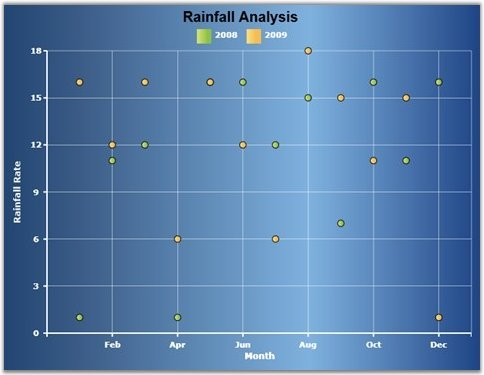

A Scatter chart displays the data as a collection of points, each having the value of one variable determining the position on the horizontal axis, and the value of the other variable determining the position on the vertical axis.
The following code example illustrates how to create a Scatter Chart.
|
[XAML]
<syncfusion:ChartSeries Type="Scatter" LegendLabel="2008" Foreground="{StaticResource Series1}"/> |
|
[C#]
series.Type = ChartTypes.Scatter; |
Run the code. The following output is displayed.

Figure 38: Chart Displaying Scatter Series [ChartType="Scatter"]